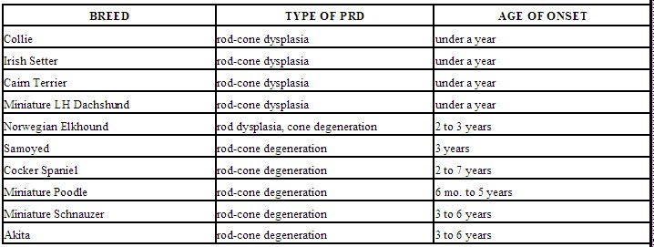

Are you building sled dog team and looking for speed? Get a Siberian
Husky. Are you more concerned with strength and stamina? Then go for the
Alaskan Malamute. Looking for a dog that is somewhere in between, and is
more human-oriented than dog-oriented
(an important distinction in team building)? Your best bet is a Samoyed.
Or are you just looking for a nice dog to own as a pet, and think that
one of these three breeds might be right for you? Then you should become
acquainted with their most prevalent characteristics. In most of their
traits, these dogs vary mostly by degree; if you have decided on a snow
dog, you should talk with experts in all three breeds to narrow down which
one to bring home.
Siberians, Malamutes and Samoyeds all originated in the northernmost
parts of the world as sled dogs and companions; Siberians and Samoyeds
were also used to herd reindeer. All three breeds still retain the
instincts, abilities and appearances that made them such valued animals
centuries ago, and all of these should be considered if you want a snow
dog as a pet.
Appearance. Siberians and Malamutes come in a variety of colors,
while Samoyeds are pure white or a mixture of white and cream. Their
triangular, well-furred ears protect against
biting winds and their deep-set, almond eyes
protect against snow glare. (Blue eyes are only acceptable on the
Siberian.) The dogs can wrap their long, curling tails around their noses
for added warmth in bitter cold. All three have a long, harsh outer coat
and a dense undercoat designed to protect them from the elements. (The
Samoyed's coat is more profuse than the Siberian's or Malamute's.) This
undercoat will shed moderately throughout the year and profusely once or
twice a year. If you don't want dog hair all over your house, don't get a
snow dog! Regular brushing is essential to maintain coat condition and to
prevent matting; on the other hand, these breeds tend to keep themselves
very clean.
Size and Strength. The Malamute is the largest and most powerful
of the three breeds, often weighing up to 85 pounds as compared to the 50-60
pound Siberian and Samoyed. All three breeds are very strong and retain a
very strong pulling instinct, to which anyone who has ever walked one on
leash can attest! Early training on leash is essential for any owner who
would rather walk his snow dog than be walked by it. And, since they tend
to be affectionate and boisterous, they should also be taught good manners
early on so they can keep their size and strength under control.
Trainability. Dogs pulling a heavy sledge across uncertain
terrain, with their master several yards behind them, have to be able to
use their heads and make their own decisions. Today's snow dogs retain
that independent spirit. While intelligent, they can be more difficult to
train than, for example, a retriever or a Border Collie. They are easily
bored with repetition and may simply not see the point of some obedience
exercises. (It is said that Samoyeds will not play fetch because they
refuse to run after something that their owner has thrown away.) However,
patience, persistence and a sense of humor can turn a snow dog into an
obedient pet.
Temperament. Snow dogs are among the friendliest of dog breeds.
Since they were bred to work in teams, they are pack-oriented
and love to be around people and, in most cases, other dogs. They adore
children, although play should be supervised due to their size. All of
these traits make them great family pets; it also means that they should
not be left alone for long periods of time. These dogs are happiest when
allowed to live inside the house where they can be close to their people.
And while their wolf-like appearance may
intimidate some, these dogs are not good guard dogs; they see every
stranger as a potential friend.
Activity Level. Be prepared to give your snow dog a lot of
exercise. Siberians love to run, and Malamutes have the stamina to walk
for miles without getting tired. Adequate daily exercise will keep these
dogs in good physical condition and prevent the boredom which can lead to
destructive behavior.
Bad habits. Snow dogs living in the Arctic protect themselves on
cold nights by sleeping in holes dug into the snow. Your snow dog will
amuse itself by digging holes in your yard or under your fence. Siberians
in particular are great escape artists. All of these dogs love to eat
(although they don't require much food for their size) and will eat
anything left out in the open; Samoyeds are known to be great "counter-surfers."
Consistent training and constructive activity can keep these bad habits to
a minimum. Excessive barking is generally not a problem; however, these
dogs tend to vocalize in other ways, making a "roo-roo"
sound to express pleasure or attract attention. (Their owners usually see
this as an endearing trait rather than a bad habit!)
In short, snow dogs are beautiful, charming, headstrong, and lovable-and
often a challenge as well. Visit the parent club Web sites for more
information, and to determine if there is no dog like a snow dog for you.
1) I could walk around safely barefoot in the dark;
2) My house could be carpeted instead of tiled and laminated;
3) All flat surfaces, clothing, furniture, and cars would be free of
dog hair;
4) When the doorbell rang, it wouldn't sound like the SPCA kennels;
5) When the doorbell rang, I could get to the door without wading
through four or five dog bodies who beat me there;
6) I could sit how I wanted to on the couch without taking into
consideration where several little furbodies would need to get;
7) I would not have strange presents under my tree....like dog bones,
stuffed animals and have to answer to people why I wrap them up;
8) I would not be on a first name basis with a vet;
9) Most used words in my vocabulary would not be: potty, outside,
sit, down, come, no, and leave him/her ALONE;
10) My house would not be cordoned off into zones with baby gates;
11) My purse would not contain things like poop pick up bags and dog
treats;
12) I would no longer have to spell the world B-A-L-L and
F-R-I-S-B-E-E;
13) I would not buy weird things to stuff into "kongs", or have to
explain why I'm buying them, or what a "Kong" is;
14) I would not have as many leaves INSIDE my house as outside;
15) I would not look strangely at people who think having their ONE dog
ties them down too much;
16) I would not have to answer the question why do I have so many dogs
from people who will never have the joy in their life of knowing they are
loved unconditionally by something as close to an angel as they will ever
get. Who else has a friend who considers you the MOST important thing in
the whole wide world all the time.
Author Unknown
Progressive Retinal Atrophy
PROGRESSIVE RETINAL DEGENERATION / PROGRESSIVE RETINAL
ATROPHY
Progressive retinal degeneration (PRD) is also known as progressive
retinal atrophy (PRA) and refers to retinal diseases that cause blindness.
Some breeds have blindness by abnormal development of the retina and this
is called dysplasia. Other breeds have a slowly progressive degeneration
or death of the retinal tissue and this is degeneration. These two types
of diseases affect many breeds. In general these diseases are thought to
be inherited but inherited differently in each breed.
In all animals with PRD the outcome, age of the patient and what the
veterinary ophthalmologist sees are the basis for the classification of
exactly what type of condition the patient has. Different breeds of dogs
have variations in the age the problem starts and speed with which the
blindness develops. The condition of PRD has been seen in almost every
registered breed and in mixed breed dogs as well. This same condition
occurs in humans and is known as retinitis pigmentosa.
As the name PRD implies, a slow death of retinal tissue occurs. It is a
slowly progressive disease and the earliest signs may be overlooked. As
stated above, these diseases are known to be passed from parents to
offspring even though the parents may have normal eyes. Therefore,
identification of breeding animals with PRD is essential to prevent spread
of this condition.
To better understand PRD, a basic understanding of the function of the
retina is needed. The retina is a highly complicated tissue located in the
back of the eye. Light strikes the retina and starts a series of chemical
reactions that causes a nerve impulse. The impulse passes through the
layers of the retina to the optic nerve and from there to the brain where
vision takes place. In the retina, cells called rods are involved with
black and white or night vision and cells called cones are involved with
color or day vision. Progressive retinal degeneration may effect either
the rods alone, the cones alone or both the rods and cones together.
Progressive retinal degeneration is not a painful condition so your pet
will not have a reddened eye or have increased blinking or squinting. For
this reason most clients will not notice the early stages of the
condition. Some clients will notice an abnormal shine coming from their
pet's eyes. This abnormal shine is because the pupils are dilated and
don't respond as quickly to light as pupils of normal dogs. The earliest
signs of PRD include night vision difficulties that in most cases will
progress to day blindness. Clients will often remember that their pets
seemed disoriented when going out to the yard at night and they had to
leave a light on for them. Night blindness may be manifested by a pet that
is afraid to go into a dark room. Occasionally these pets will get lost in
their own home after the lights have been turned off.
The veterinary ophthalmologist examines the retina with an instrument
called an indirect ophthalmoscope. Changes in the retinal blood vessel
pattern, the optic nerve head, and the reflective substance within the
dog's eye called the tapetum can be seen which are classic for PRD.
However in some breeds PRD characteristics have little or no early
changes. The eyes of these dogs may appear normal until they are in the
later stages of the disease. Progressive retinal degeneration will
progress at different rates in different breeds. This variation causes
difficulty in determining just how long any particular dog will continue
seeing.
There is no possible treatment for PRD although a number of vitamin
therapies have been suggested by various people. One such vitamin "Ocuvite"
manufactured by Stortz has been recommended for people with retinitis
pigmentosa and some patients claim that their vision is improved somewhat.
At this time, none of the vitamin treatments have been proven to be
effective scientifically, so use of Ocuvite must be deemed a naturopathic
remedy rather than a medical treatment. Use of any other megavitamin
treatment is discouraged.
Cataracts may occur in some patients with PRD and generally occur later
in the disease. Formation of cataracts may interfere with the
ophthalmologist's direct examination of the retina and make other tests
such as an electroretinogram (ERG) essential for diagnosis.
Diagnosis is made and confirmed by the ERG. This test involves
sophisticated instrumentation used to measure the response of the retina
to flashes of light. Your pet would be anesthetized for this test. The pet
is then placed into a darkened area, a special contact lens with a gold
ribbon is placed on the cornea and two tiny needles are placed under the
skin around the eye. A light flash that has been dimmed with filters
stimulates the retina and this procedure is repeated intermittently for 20
minutes. Finally, a bright red, blue and white flash are used for final
analysis. A healthy retina will produce a characteristic wave form that
builds from the time the lights are turned out. The ERG is sensitive
enough to diagnose dogs with PRD before they begin to demonstrate signs of
the disease.
Here is a partial list of breeds affected with Progressive Retinal
Degeneration:

In summary, PRD refers to a broad group of inherited retinal disease
which result in the blindness of dogs. Because of the nature of the
disease and sometimes the late onset, repeated examinations may be
required to detect individuals with the condition. Patients affected
should not be used for breeding. Pedigree studies are used to help
eliminate other carriers of this condition such as the pet's brothers,
sisters, mother, father and any offspring. How to adjust to having a pet
that is blind is important and is discussed on the web page entitled How
to Deal with a Blind Pet.
For more information on PRA in dogs, Dr. Gregory Acland has produced
some excellent reference material located at
The Dog Genome Project Homepage
Written by Dr. Dennis Hacker, Edited by Dr. Michael Zigler
Copyright 2001, Eyevet Consulting Services.
What Are Allergies, and How Do They Affect Dogs?
One of the most common conditions affecting dogs is allergy. In the
allergic state, the dog's immune system "overreacts" to foreign substances
(allergens or antigens) to which it is exposed. These overreactions are
manifested in three ways. The most common is itching of the skin, either
localized (one area) or generalized (all over the dog). Another
manifestation involves the respiratory system and may result in coughing,
sneezing, and/or wheezing. Sometimes, there may be an associated nasal or
ocular (eye) discharge. The third manifestation involves the digestive
system, resulting in vomiting or diarrhea.
Aren't There Several Types of Allergies?
There are five known types of allergies in the dog: contact, flea, food,
bacterial, and inhalant. Each of these has some common expressions in
dogs, and each has some unique features.
What is Food Allergy?
A food allergy is a condition in which the body's immune system reacts
adversely to an ingredient in a food such as the protein source, or a
preservative.
What Foods Are Likely to Cause an Allergic Reaction?
Any food or food ingredient can cause an allergy. However, protein,
usually from the meat source of the food, is the most likely offender.
Proteins commonly found in pet foods are derived from beef, chicken, lamb,
and horsemeat.
Pets are not likely to be born with food allergies. More commonly, they
develop allergies to food products they have eaten for a long time. The
allergy most frequently develops in response to the protein component of
the food; for example, beef, pork, chicken, or turkey. Food allergy may
produce any of the clinical signs previously discussed, including itching,
digestive disorders, and respiratory distress. We recommend testing for
food allergy when the clinical signs have been present for several months,
when the pet has a poor response to therapy, or when a very young pet
itches without other apparent causes of allergy. Testing is done with a
special hypoallergenic diet, and bottled water. Because it takes at least
4 weeks for all other food products to get out of the system, the pet must
eat the special diet exclusively for 4-8 weeks (or more). If positive
response occurs, you will be instructed on how to proceed. If the diet is
not fed exclusively, it will not be a meaningful test. We cannot
overemphasize this. If any type of table food, treats or vitamins are
given, these must be discontinued during the testing period. There may be
problems with certain types of chewable heartworm preventative, as well.
Your veterinarian will discuss this with you.
Because pets that are being tested for inhalant allergy generally itch
year round, a food allergy dietary test can be performed while the
inhalant test and antigen preparation are occurring.
Isn't a Lamb-Based Pet Food Supposed to Be Hypoallergenic?
No, although many people think it is. Several years ago there were no pet
foods on the commercial market that contained lamb. A manufacturer of
prescription pet foods formulated a food from lamb that was suitable for
allergy testing. Because of that situation,
lamb-based pet food was considered "hypoallergenic."
|
 December, 2003
December, 2003
November, 2003
October, 2003
August-September, 2003
July, 2003
May/June, 2003
April, 2003
March, 2003
February, 2003
January, 2003
November/December, 2002
October, 2002
September, 2002
August, 2002
July, 2002
June, 2002
May, 2002
April, 2002
February, 2002
January, 2002
December, 2001
November, 2001
October, 2001
September, 2001
July-August, 2001
June, 2001
May, 2001
April, 2001
March, 2001
February, 2001
January, 2001
December, 2000
Current Newsletter
SCWS Home Page

FastCounter by bCentral
|